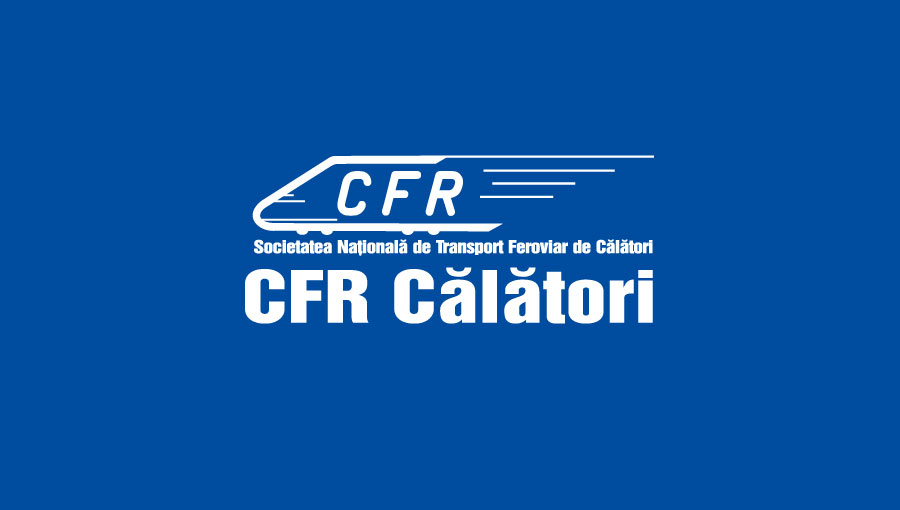
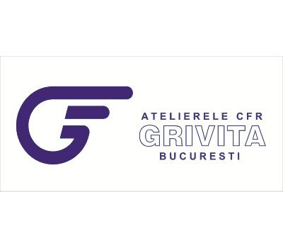
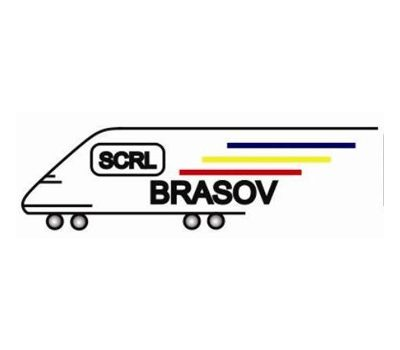
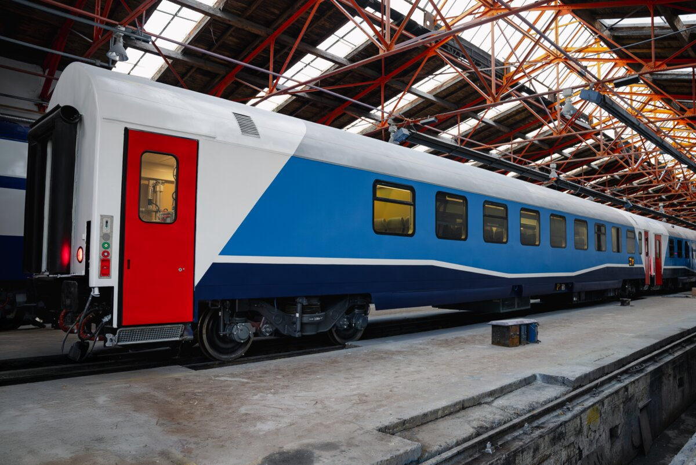
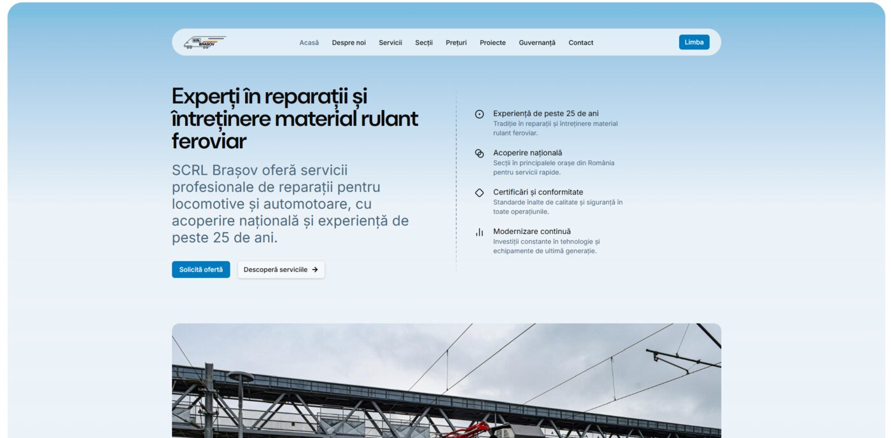

CFR Călători
Desiro SR 20D „Blue Arrow"
120 Siemens Desiro Class 96 DMU sets on Regio and InterRegio routes. We supply all glass for the fleet — cab windshields, side windows, doors.
RAILAMRAILDURWindshieldsSide
Windshields, side windows, doors and interior panels for coaches, locomotives, trams and metro — manufactured to AFER and European standards, delivered in 1–2 weeks across Romania.






We inherit 25+ years of premium processing from Glass Expert (EVOLAM, EVODUR, EVOPRINT, smart glass) and apply them to railway specifics — AFER certified and EN 15152 compliant.
Multi-layer laminated glass for windshields and safety side windows. Impact, abrasion and ballistic resistance.
Thermally tempered glass for coach side windows, partitions and doors. Superior mechanical strength, safe fragmentation.
PDLC switchable glass for VIP compartments, PRM cabins and on-demand privacy dividers.
Ceramic ink printing for brand livery, solar-control gradient, decorative sandblasting and signage.
Antimicrobial and self-cleaning coating for high-touch passenger areas — doors, handles, lavatory panels.
Passenger coaches, locomotives, high-speed trainsets. Curved or flat windshields, insulated side windows, doors, interior panels, luggage racks.

Driver cabins, side windows, passenger doors, dividers. Retrofit-compatible with Imperio (Astra) and Bozankaya fleets in service.

Passenger trainset glass, passenger doors and interior. TSI LOC&PAS compliant for TEN-T network and Metrorex requirements.
Glass Expert Contractor holds active contracts with Romania's leading rolling stock operators and workshops. We supply AFER-certified glass for fleets operating every day.
120 Siemens Desiro Class 96 DMU sets on Regio and InterRegio routes. We supply all glass for the fleet — cab windshields, side windows, doors.
100 Astra Imperio Metropolitan trams, 36 m long, 322 passengers each. Side windows, doors and interior partitions for STB's new fleet.

We supply glass for the repair + window retrofit program at Grivița Workshops — CFR passenger coaches taken out of service for maintenance.

Active contract on the PNRR program modernizing 42 passenger coaches (22 cls. 2 + 20 with PRM facilities). We supply glass for full modernization.

Societatea de Reparații Locomotive C.F.R. — Brașov. We supply cab windshields and side windows for the locomotive repair program.
Romania's first 16 trainsets at 160 km/h. Active pipeline — commercial discussions ongoing. The next milestone for VAGOGLASS on the CFR Călători fleet.
Glass Expert Contractor S.R.L. operates with active railway technical homologation and railway supplier authorization issued by the Romanian Railway Authority (AFER).
 AFER
AFER
Glass for railway vehicles. Approved by SNTFC CFR Călători SA + AFER on 10.03.2025. Risk class 1A. Technical specification ST-01/2024.
 AFER
AFER
Glass products for railway vehicles — right to supply categories of critical railway products and services on the Romanian market.
 ISO 9001
ISO 9001
Quality management system for flat glass processing and forming — NACE code C 2312.
Full documentation (certified copies) available on request for commercial offers. · Request documents →
We operate to European standards and mandatory Romanian homologations. Full documentation available on request.
VAGOGLASS is one of the fastest-growing rail glass lines in Romania. We continuously invest in certifications, technologies and partnerships.
We respond to technical inquiries within 24 hours. Our engineers prepare a tailored datasheet per application.